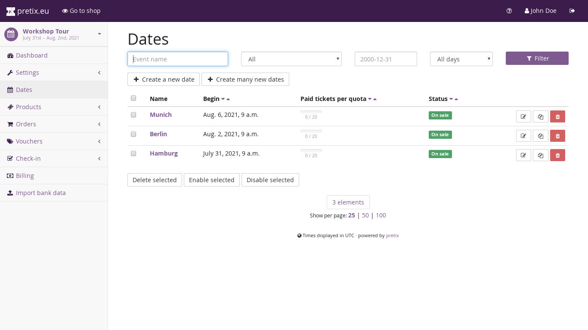
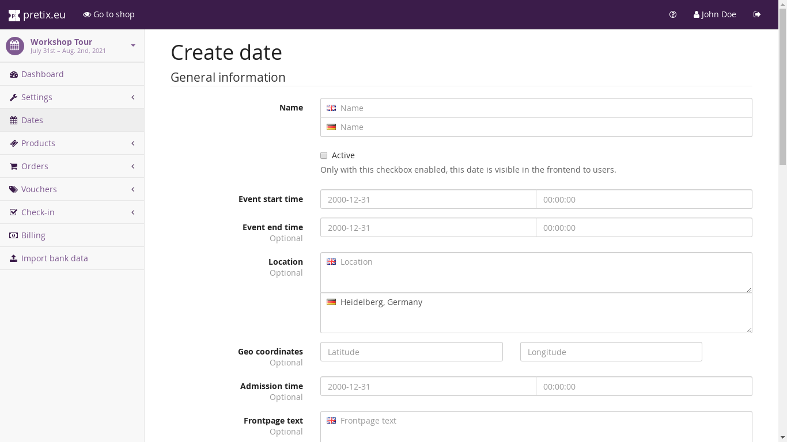

Event series¶
During creation of a new event, you can choose that you want to create this event as an event series. By event series, we mean a group of events that are similar in their structure and that you want to sell within a single shop. An event series consists of dates. Each date represents one “event” within the series.
For example, we think good examples to use the event series feature are:
A theater or theater group that shows the same play on five evenings.
A band on tour that hosts the same show in different locations.
A workshop that is given multiple times in different locations or at different times.
We don’t think that the feature is well-suited for events like the following:
Event series distributed over a large timescale like annual conferences. We suggest using multiple events in this case. You can avoid having to configure everything twice since you can copy settings from an existing event during creation of the new event.
Multiple parts of a conference or festival (e.g. different days) if a significant number of attendees will visit more than one of them. We suggest just using different products in this case.
When using an event series, the single dates of the series are using the same settings in most places. They can only differ in the following aspects:
They can have different date, time, and location parameters.
They can use different text on the shop front page.
They can have different prices for the various products.
They always have distinct quotas, which allows you to assign different amounts of tickets or to enable or disable some products completely.
They can have different rules for check-in.
Therefore, if your events are likely to need more different settings, this is probably not the feature for you. The benefits of using event series, on the other hand, are:
You only need to set most settings once, as the multiple dates live in the same shop.
Your customers can build mixed orders, i.e. they can order tickets for multiple dates at once.
Creating and modifying dates in the series¶
Click on “Dates” in the left navigation menu of your event. This page shows you the list of currently existing event dates and allows you to create, edit, clone and delete them.
If “Dates” is missing from the navigation menu, you have insufficient permission or your event has not been set up as an event series and you need to create a new event.
{kind=link}
If you click on one of them or create a new one, you will see the following form:
{kind=link}
Here, you can make changes to the following fields, most of which are optional:
- Name
This is the public name of your date. It should be descriptive enough to tell the user which date to select in a calendar.
- Active
This date will only show up for customers if you check this box. In this sense, it corresponds to the “live” setting of events.
- Event start time
The date and time that this date starts at.
- Event end time
The date and time this date ends at.
- Location
This is the location of your date in a human-readable format. We will show this on the ticket shop frontpage, but it might also be used e.g. in Wallet tickets.
- Admission time
The admission date and time to show on the ticket shop page or on the tickets.
- Frontpage text
A text to show on the front page of the ticket shop for this date.
- Start of presale
If you set this, no ticket will be sold before the time you set. If you set this on event series level as well, both dates must be in the past for the tickets to be available.
- End of presale
If you set this, no ticket will be sold after the time you set. If you set this on event series level as well, both dates must be in the future for the tickets to be available.
- Quotas
As for all events, no tickets will be available unless there is a quota created for them that specifies the number of tickets available. You can create multiple quotas that are assigned to this date directly from this interface.
- Item prices
This is a table of all products configured for your shop. If you want, you can enter a new price for each one of them in the right column to make them cheaper or more expensive for this date. If you leave a field empty, the price will follow the product’s default price.